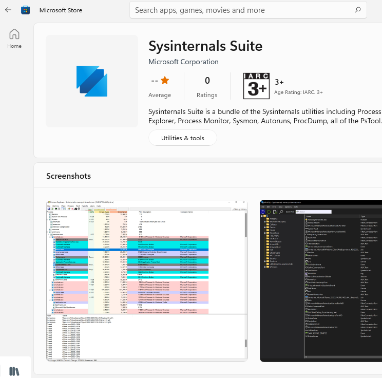
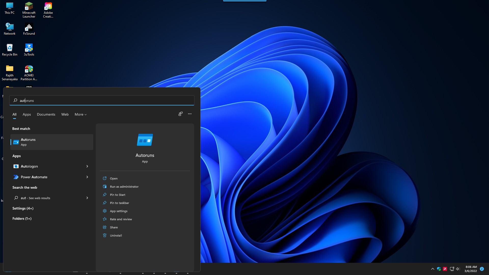

Adobe Process Killer
Follow Me on GitHub
RED Arrows Show Background Process

-
Go to Releases and download Adobe.zip file and extract it
-
Double click Adobe.bat file and all Adobe Process will be stopped

-
And you can use sysinternals suite to stop creative cloud process in boot time

-
Click Windows key open start menu and search Autoruns and click run as administrator !important

-
Disable this entry’s only and adobe update services will not run on startup